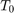

INSTITUTO POLITÉCNICO NACIONAL
UNIDAD PROFESIONAL INTERDISCIPLINARIA EN INGENIERÍA Y TECNOLOGÍAS AVANZADAS
Análisis de Señales y Sistemas
Autor: Noguerón Soto Hugo de Jesús
Profesor: Dr. Rafael Martínez Martínez
Contents
Objetivos
- Realizar gráficas de series de Fourier exponenciales y trigonométricas en tiempo continuo.
- Manipulación de instrucciones en MATLAB.
- Calculo númerico de los coeficientes de Fourier.
Introducción
En el libro Linear Systems and Signals de B.P. Lathi cap. 6.6. Podemos observar conmo el autor hace una demostración de cómo es posible encontrar los coeficientes de una serie de Foirier compleja de una forma numérica empleando la transformada de Fourier discreta.
Tenemos una señal periódica a la cual le calcularemos su serie de Fourier compleja en un periodo , tenemos entonces que elementos en dicho periodo. La relación entre y los elementos de podemos hallarla partiendo de la ecuación:
Podemos reducir a T a valores cercanos a cero, sin embargo nunca a cero. Por lo que podemos deducir la ecuación.
%
Desarrolo
Problema 1
,
a0=0.504; an=@(n) 0.504*(2/(1+16*n^2)); bn=@(n) 0.504*(8*n/(1+16*n^2)); armo=4; a=-7; b=9; f=@(t) exp(-t/2); tf=pi; t0=0; sfct(t0,tf,an,bn,a0,f,armo,a,b)
Para 15 armónicos:
close All
armo=15;
sfct(t0,tf,an,bn,a0,f,armo,a,b)
Problema 2
close All clear All f=@(t)(heaviside(t+0.5)-heaviside(t-0.5)).*(6.*t)+(heaviside(t-0.5)-heaviside(t-1.5)).*(-6.*t+6); dn=@(n) (-12/(n^2*pi^2))*j*(sin(n*pi/2)); d0=0; tf=1.5; t0=-0.5; armo=4; a=-4; b=6; sfc(t0,tf,dn,d0,f,armo,a,b)
Para 15 armónicos:
close All
armo=15;
sfc(t0,tf,dn,d0,f,armo,a,b)
Problema 3
close All clear All u=@(t) (t>=0)&(t>=0); f=@(t)(u(t+pi/2)-u(t-pi/2)); dn=@(n) sin((n*pi)/2)/(n*pi); d0=1/2; tf=pi; t0=-pi; armo=4; a=-15; b=16.5; sfc(t0,tf,dn,d0,f,armo,a,b)
Para 15 armónicos:
close All
armo=15;
sfc(t0,tf,dn,d0,f,armo,a,b)
Problema 4
close All clear All d0=2/pi; dn=@(n) 2/(pi*(-4*n^2+1)); t0=0; tf=pi; f=@(t) sin(t); armo=4; a=-7; b=9; sfc(t0,tf,dn,d0,f,armo,a,b)
Para 15 armónicos:
close All
armo=15;
sfc(t0,tf,dn,d0,f,armo,a,b)
Problema 5
close All clear All d0=1/3; dn=@(n) 1/(3); t0=0; tf=3; f=@(t) (t==1)*1; armo=4; a=-7; b=7; sfc2(t0,tf,dn,d0,f,armo,a,b)
Para 15 armóncos
close All
armo=15;
sfc2(t0,tf,dn,d0,f,armo,a,b)
Problema 6
Para este problema se creo una función similar a la que se observa en el COMPUTER EXAMPLE C6.2 del libro B.P. Lathi, el cual genera la mismas gráficas que en el libro se muestran.
close All clear All dn=@(n) (-12/(n^2*pi^2))*j*(sin(n*pi/2)); d0=0; tf=1.5; t0=-0.5; a=-3; b=3; Ex_6_2_Lathi (dn,d0,tf,t0,a,b)
Problema 7
Elabore un código que implemente el algoritmo de trapecio compuesto para . Utilice este código para aproximar del ejemplo de la práctica. Ahora implemente el código COMPUTER EXAMPLE C6.4 que se encuentra al final de la sección 6.6 de Lathi, y calcule nuevamente el los coeficientes del ejemplo propuesto. Muestre una tabla que contenga los coeficientes mencionados calculados con los dos algoritmos y de forma exacta, ¿Qué algortmo aproxima mejor a los coeficientes?, para esto compare los coefientes con el valor absoluto de la resta.
El código no se pudo ejecutar debido a que contiene un error que no pudo ser corregido a tiempo. Por lo que sólo se incluye a continuación.
function tabla tabl=zeros(16,4); dnexacto=@(n) 0.504/(1+4*n*j); for col=1:6 switch col case 1 for i=0:15 tabl(i+1,1)=i; end case 2 for ii=0:15 tabl(ii+1,2)=abs(dnexacto(ii)); end case 3 T_0 = pi; N_0 = 256; T = T_0/N_0; t = (0:T:T*(N_0-1))'; M = 10; x = exp(-t/2); x(1) = (exp(-pi/2) + 1)/2; D_n = fft (x)/N_0; n = [0:15]'; for iii=0:15 tabl(iii+1,3)=abs(fftshift(D_n)); end case 4 m=15000; n=(0:4); b=pi; a=0; t=-100:.1:100; w0=2*pi/(b-a); f=@(t) exp(-t/2)*exp(-n*w0*1i*t); h=(b-a)/m; aprox=f(a)+f(b); for i=1:m-1 x=a+i*h; aprox=aprox+2*f(x); for iv=1:16 aprox=(h/2)*aprox; tabl(iv,4)=aprox; end end end tabl end
Apéndices
1.
function sfct(t0,tf,an,bn,a0,f,armo,a,b)
% t0 el valor inicial para calcular la serie
% tf el valor final donde calcular la serie
% an,bn función de la fórmula de los an y bn
% f función original
% armo número de armonicos a utilizar en la gráfica
% a, b intevalo para realizar la grafica de la serie
w0=2*pi/(tf-t0);
sf=a0;
t=a:0.0001:b;
for n=1:armo
sf=sf+an(n)*cos(n*w0*t)+bn(n)*sin(n*w0*t);
end
figure (1)
hFig = figure(1);
set(hFig, 'Position', [0 0 900 900])
subplot(3,2,1)
plot(t,sf,'LineWidth',2)
grid on
legend('Serie de Fourier','Location','Best') xlabel('t','FontWeight','bold','FontSize',16)sf=a0;
t1=t0:0.0001:tf;
for n=1:armo
sf=sf+an(n)*cos(n*w0*t1)+bn(n)*sin(n*w0*t1);
end
subplot(3,2,2)
plot(t1,f(t1),'r','LineWidth',2)
grid on
hold on
plot(t1,sf,'LineWidth',2)
legend('Función original','Serie de Fourier ','Location','Best') xlabel('t','FontWeight','bold','FontSize',16)nn=-armo:armo;
axis auto
subplot(3,2,4)
e=f(t1)-sf;
plot(t1,e,'LineWidth',2)
title('Error','FontWeight','bold','FontSize',16) xlabel('t','FontWeight','bold','FontSize',16)axis auto
grid on
subplot(3,2,6)
e=f(t1)-sf;
area(t1,e.^2)
legend('Energia del error','Location','Best') xlabel('t','FontWeight','bold','FontSize',16)axis auto
grid on
absdn=zeros(1,length(nn));
cont=1;
for i =-armo:armo
if i==0
absdn(cont)=a0;
end
absdn(cont)=an(i)+bn(i);
cont=cont+1;
end
subplot(3,2,3)
stem(w0*nn,abs(absdn),'LineWidth',2)
title('Espectro de magnitud C_n ','FontWeight','bold','FontSize',16) xlabel('\omega','FontWeight','bold','FontSize',16)grid on
subplot(3,2,5) % %
stem(w0*nn,angle(absdn),'LineWidth',2) % %
title('Espectro de fase, \angle de C_n ','FontWeight','bold','FontSize',16) % % xlabel('\omega','FontWeight','bold','FontSize',16)grid on
end
2.
function Ex_6_2_Lathi (dn,d0,tf,t0,a,b)
% t0 el valor inicial para calcular la serie tf el valor final donde
% calcular la serie dn función de la fórmula de los dn a, b intevalo
% para realizar la grafica de la serie d0 coeficiente D_o
w0=2*pi/(tf-t0);
sf=d0;
t=a:0.01:b;
armo=0;
for k=1:9
for n=1:armo
sf=sf+dn(-n)*exp(w0*-n*t*j)+dn(n)*exp(w0*n*t*j);
end
figure (1)
hFig = figure(1);
set(hFig, 'Position', [0 0 900 900])
subplot(3,3,k)
plot(t,sf,'LineWidth',2)
grid on
legend('Serie de Fourier','Location','Best') xlabel('t','FontWeight','bold','FontSize',16)sf=d0;
t1=t0:0.01:tf;
armo=armo+2;
end
end
Referencias
- B.P. Lathi. Signal and Systems.